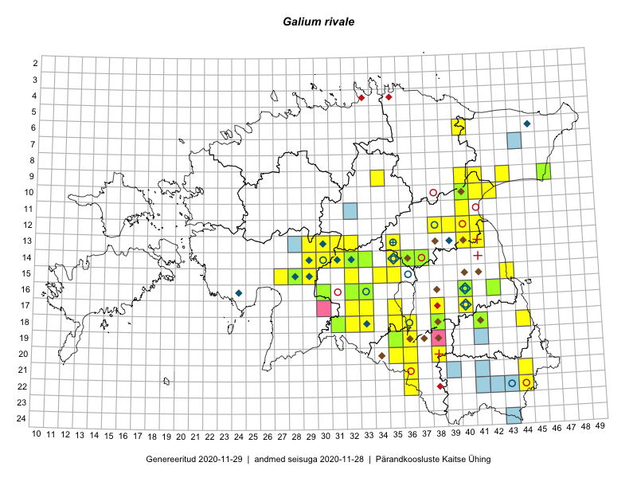

Galium rivale
Uuendatud: 2016-12-02
Kaardile koondatud taksonid: Galium rivale (Sibth. & Sm.) Griseb.

Kaart põhineb 52 kirjel, neist vaatlusi 49 ja eksemplare 3. Taksonit on leitud 39 ruudust.
Kuvatud viited 20 esimesele andmebaasikirjele, ülejäänud PlutoFis
- Thea Kull: 2015-07-07: 16-40: ala
- Peedu Saar: 2015-07-04: 18-44: ala
- Peedu Saar: 2015-08-04: 14-36: ala
- Peedu Saar: 2015-08-10: 13-40: ala
- Peedu Saar: 2015-08-11: 13-41: ala
- Peedu Saar, Eerik Leibak: 2015-08-16: 12-40: ala
- Peedu Saar, Ott Luuk: 2015-09-02: 17-38: ala
- Toomas Kukk, Peedu Saar, Mall Värva, Sander Laherand: 2014-07-27: 18-38: ala
- Maria Abakumova, Helle Mäemets: 2015-07-01: 14-32: ala
- Maria Abakumova, Helle Mäemets: 2015-07-30: 15-34: ala
- Maria Abakumova: 2015-07-07: 16-32: ala
- Maria Abakumova: 2015-06-21: 16-33: ala
- Maria Abakumova: 2015-06-25: 16-33: ala
- Maria Abakumova: 2015-07-21: 17-33: ala
- Maria Abakumova: 2015-06-29: 17-33: ala
- Ülle Jõgar, Illi Tarmu, K. Rünk: 2015-07-04: 12-38: ala
- Maria Abakumova: 2015-05-08: 16-32: ala
- Maria Abakumova: 2015-05-20: 17-32: ala
- Maria Abakumova: 2015-05-14: 17-33: ala
- Thea Kull, Meeli Mesipuu, Eerik Leibak: 2014-07-11: 06-40: ala